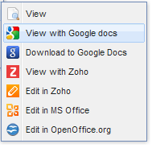

| Key |
Description |
Default value |
| LicenseKey |
Put the license key here after purchase. If the key is not set the application will work in a trial mode.
The trial mode allows not more than 10 sessions and shows a trial notification when a user logs on.
If a user is not active during 60 minutes, the sessions will be ended.
To terminate an existing session manually, you need to restart the application. |
"" |
| Administrators |
List of administrators' names, comma-separated. Any user can be an administrator if its name is in this list.
Administrators can login to the Admin Panel ("adminpanel.aspx" page)
and Diagnostics("diagnostics.aspx") functionality of the HTTP Commander.
You can also type group by "group:" prefix (Each member of the group is Administrator)
|
"Administrator,Admin,group:Administrators,group:Domain admins,group:Admins" |
| ShowDiagnosticsASPXOnlyForAdmins |
The key defines if /diagnostics.aspx page is available to all authenticated users or only to administrators
(Defined by "administrators" parameter).
You can disable the diagnostics page output from users if it shows info that you want to hide.
Note! By default it is available for all users! |
false |
| DataFolderPath |
Path to the folder with XML users and folders settings. By default, it is stored in the HTCOMNET\Data folder.
To prevent file download:
- You can disable "read" permissions in IIS for this folder.
For Windows 2003:
-
Open IIS console: Control panel->Administrative tools->
Internet Information Services->Expand "Default web site" and "HTCOMNET" folder.
- Right-click the "Data" folder and select "Properties" in the context menu.
In the Data properties dialog box, open "Directory" tab and uncheck Read permissions.
Screenshot
For Windows 2008, 2012, 2016:
- In the IIS console select Data node inside "HTCOMNET" node and click "Handler mappings" in the right tab.
Select StaticFile in the list and click "Edit Feature Permissions" link in the right tab. In the next dialog window, uncheck "Read" permissions.
Screenshot
- or move this folder outside of the web site root.
Copy the "Data" folder to a new path, like c:\, and set "c:\Data" value. Check NTFS permissions for new Data folder location.
|
"~/Data" |
| LogEvents |
Key defines list of events that will be logged. Set empty value to disable logging.
See also LogRecordsMaxCount, AllowUsersWatchModifications parameters.
|
"View,Download,Upload,Create,Modify,Edit,Rename,Delete,Restore,Copy,Move,OfficeLock,OfficeUnLock,CreatePublic,Login,Logout" |
| CreateRootFoldersIfNotExists |
Set true to create root folders automatically if it does not exist. Applied only for paths with %USERNAME% or %LOGONUSER% patterns. |
true |
| HideFilesWithAttributes |
The key defines if files with some attributes will be hidden for users. Example: value="hidden,system,readonly,encrypted" - files and folders with attributes Hidden, System, Read-only or Encrypted are hidden. Security note. |
"" |
| ZipUnzipDefaultCodePage |
The key defines default code page for Zip archive. 850 is a code page for English-speaking and most European countries. If the files with names in your language are added to the ZIP with corrupted name, you need to modify this value. You can google for your region's code page.
See also ZipUnicodeFileNames parameter.
|
850 |
| ZipUnicodeFileNames |
The key defines using unicode file names for create Zip archives.
See also ZipUnzipDefaultCodePage
|
true |
| EnableChangePassword |
The key defines if users can change their own password.
For AD and Windows users Password security policy could be applied: there are password minimum age, length requirement, etc.
If new password does not meet specified requirement, error message will be displayed to user .
Take a look at the screenshot below to check Domain Security Policy.
Screenshot
|
true |
| ErrorsMaxCount |
Max size of records for errors file Data\Errors.xml |
100 |
| EmailNotification |
Notify about uploaded/modified/downloaded/created/deleted files/folders, public link creation
Example:
Events: Upload,Modify,Download,Create,Delete,CreatePublic
When: OnSessionEnd
Emails: mike@mysite.com,jdoe@mysite.com
Users: admin,john
Groups: students,staff
Path: Demo folder 1\
Path: path to folder2\commonproject.doc
Path: ^Domain users demo folder\\folder1\\ (type "Regex")
Events is a comma-separated list of events, for which notification emails will be sent.
Available events: Upload,Modify,Download,Create,Delete,CreatePublic
When is a one of the OnSessionEnd or Immediate values, setting when notification emails about actions with files will go.
Emails is a comma-separated list of e-mail addresses that will get notification about events with files.
Users is a comma-separated list of users to monitor.
Groups is a comma-separated list of groups to monitor.
The application is monitoring events (upload/modify/download/create/delete) activity of a user if its name is listed in the user list or
if a group it is a member of is listed in the groups list.
If both users and groups lists are empty, then all users are monitored.
Path specify what folders and files to monitor.
NOTE: Path should be specified in Http Commander notation, not physical folder/file path.
There two types of paths: plain and regex.
For plain paths you may specify either file or folder.
To distinguish folder path from file path, a folder path should end with a backslash.
When you specify file, for example, "share\dir1\file.txt", then monitor only that particular file.
When you specify folder, for example, "share\", then monitor all files in that folder and all its subfolders.
For regex paths, that path parameter should contain regular expression to match against file path.
For example, "^share\\.*\.txt$" matches all file with ".txt extension in "share" folder and all its subfolders.
For monitor of all folders you can add a path "^.*$" with Regex type.
You may specify Path parameter a number of times.
The application monitors a file if it matches at least one of the path filters specified.
If you do not specify a path filter, then all files are monitored.
Description of the example described above:
if the users admin and john or any another user of students and staff groups
are uploading (or-and modifying, downloading) files into (from) the Demo folder 1 or a path to folder2\commonproject.doc file
or into (from) the folder matching the regular expression "^Domain users demo folder\\folder1\\",
the notifications will be sent to the following e-mail addresses: mike@mysite.com and jdoe@mysite.com.
You need also to configure Mail Settings parameters and type your mail server,
port and user if authentication is needed.
|
|
| ApplicationName |
The name of application. You can type here your custom value like "ClassFiles" |
HTTP Commander |
| DomainName |
Url of the application. In case if HTTP Commander work in your internal network
and accessible by your internal domain name, then some of features may not work,
because they require access to HttpCommander from internet.
Features which require global domain name are: public links, Zoho, Google Drive
(documents viewer), Pixlr, Office Web Access (document viewer), Adobe Creative Cloud Online Image Editor (Aviary).
Set absolute url (with global domain name) to HTTP Commander application
including path to application folder.
Example: "http://www.example.com/HTCOMNET/".
Set an empty string (default value) for this parameter if you want to use the current HTTPCommander url
(used by users to open HTTP Commander in browser). |
"" |
| ZipLevelCompression |
Level of Zip compression (from 0 to 9 inclusively). |
6 |
| ShowControlNavigationFolders |
To show (true) or hide (false) buttons (back, forward, resent folders) control of navigation according to folders. |
true |
| EnableAutoLogoutWhenSessionTimedOut |
If this parameter is enabled, in case of inactivity during lifetime of session the Default page will redirect to the Logout page.
Note 1. Value of session timeout can be changed in the web.config file:
...
<configuration>
...
<system.web>
...
<sessionState timeout="60" />
...
By default timeout of session 60 minutes (1 hour). See sessionState timeout parameter.
Note 2. Activity of the user is considered execution of ajax-server requests.
|
false |
| TemporaryFolder |
Temporary folder. It is used to store temporary file, such as thumbnails, intermediary video files created in video conversion process, zip files for download, and other.
When the parameter is blank, not valid or folder not exists, the system temporary folder (usually C:\Windows\Temp) is used.
Note 1 Be sure to set the NTFS permissions to read and write for application pool account and end-user accounts in Windows version.
Note 2 You can also change the path to the temporary ASP.NET files,
including temporary folders for standard ASP.NET upload (Standard tab in uploaders window) in Web.config file
in system.web section for compilation tag specify tempDirectory attribute with the path to the desired temporary folder. For example:
<configuration>
...
<system.web>
...
<compilation targetFramework="4.0" tempDirectory="d:\temp\" />
...
For more info see Temporary folder description.
|
"" |
| SearchMethodOfFiles |
A method of searching for files and folders.
Available values:
-
Disabled: the ability to search for files, folders is completely disabled;
-
OnlyWindowsSearch: only the Windows Search service used to search files/folders.
Note that, in this case, search by Details is not available;
-
NotUseWindowsSearch: use only the standard method (recursive listing subdirectories with a comparison pattern) to search files and fodlers. ;
-
FirstTryWindowsSearchThanStandard (by default):
use Windows Search Service firstly, and then if nothing is found, or found less than the expected value,
the search is carried out by standard method (recursive listing subdirectories with a comparison pattern).
(Search by Details only included when a standard search method used).
If you enable the ability to search for files/folders (the value is not equal to Disabled),
then on the main page at the top right of the file list will be available quick search fields to search files by name (and, if available, by contents).
Also you can add a toolbar button Search (parameter ToolbarButtons1 or
ToolbarButtons2; by defualt, Search button is included) to be able to open the search window from toolbar.
Note! Windows Search allows you to quickly find files based on their content.
To do this, you must install the Windows Search Service feature and add the desired folder in the list of indexed locations (Control Panel → Indexing Options).
See Windows Search manual.
See also parameters SearchCriterionsOfFiles,
MaxSearchResultsPerPage in UI section and hidden parameter
EnableWindowsSearchQueryBuilder in Main section.
|
"FirstTryWindowsSearchThanStandard" |
The LDAPContainer parameter may explicitly contain Ldap path
or Ldap path may be a part of multi-domain value assigned to this parameter.
The text below describes the format of Ldap path.
You may omit the server name (called serverless binding).
For example, Ldap path may look like this LDAP://DC=mydc,DC=mydomain,DC=com.
If we do not specify a specific server name, either with serverless binding
or by using the name of the domain, the Windows runtime will try to find
an appropriate Active Directory server for us.
By avoiding the specification of a particular server,
we reduce the chances of overloading that server with requests,
or of complete failure if that particular domain controller is down for maintenance
or otherwise unavailable.
This leads to more scalable and robust applications.
How does Windows runtime know what domain to use when it is not specified in Ldap path?
It infers a domain to be used based on the security context of the current thread.
When impersonation is turned on, the security context of the thread will
the security context of the logged in user, otherwise that will be context of
the application pool. If the account is an Active Directory domain account
(and not a local machine account),
then the domain of that account is used to find a domain controller.
The serverless binding does not work at all under a local machine account.
We discourage the use of serverless binding in HTTP Commander.
Consider using the DNS name of the domain in place of the server name.
This option takes advantage of automatically selecting the available domain controller,
but does not depend on the current security context.
A lot of choices are available to specify the server part in Ldap path.
Note however that the number of options is more limited if Ldap server requires SSL.
The name you specify in Ldap path must match the one specified in server certificate.
In case of mismatch, the bind may fail.
We recommend the use of a fully qualified DNS name of the server or domain
as it is most likely specified in server's certificate.
You may specify the port number if your server listen for Ldap requests on nonstandard port.
Append the port number to the server name.
For example: LDAP://10.10.11.100:50000/OU=somecontainer,O=mydirectory.
| Key |
Description |
Default value |
| ToolbarButtons1 |
The visible buttons in the toolbar. You can hide some of the buttons by modifying this key.
The "Administration" button is visible only for administrators - see the "Administrators" key.
If you want to add or modify the logo button see FAQ.
The value Separator can be repeated several times, but not in a row.
It is possible to specify the display method of the button by inserting a colon after the name - Folders:noicon, View:icononly.
|
"Folders,View,Favorites,Search,FileMenu,Upload,Clouds,Administration,Settings,Help,Logout" |
| ToolbarButtons2 |
The visible buttons in the second toolbar. You can hide some of the buttons by modifying this key.
The value Separator can be repeated several times, but not in a row.
It is possible to specify the display method of the button by inserting a colon after the name - Download:noicon, Rename:icononly.
|
"ViewEdit,Share,ViewPublicLinks,Download,New,Rename,Delete,Copy,Cut,Paste,Details,More,Separator,Select,Refresh" |
| DefaultLanguage |
The default language. The value is the name of file localization without extensions.
See Localization section of the Documentation for more info. |
"English" |
| ItemsPerPage |
Max items quantity per page in the files list. Set 0 if no pages (Always show all items at one page).
Note that 1000 files on a page can take a number of seconds to load.
Don't set the value greater than 1000. |
500 |
| HideTree |
Set to true to make the state of the folder tree panel collapsed when a user logons. |
false |
| TreeView |
Key defines tree view. Value can be:
Disabled - tree is disabled and hidden,
Enabled - tree is enabled and autoexpandable,
NotAutoExpandable - tree is enabled and not autoexpandable.
Tree with auto expanding enabled makes work slower so you can disable it
(if you have a small number of folders in the folder structure and tree view is not required). |
"NotAutoExpandable" |
| AutoOpenFirstFolder |
The key defines if the content of first root folder should be shown when a user logons.
Applied only if tree view is available. |
true |
| HideDetailsPane |
Set true to make the state of details pane (with file properties, on right side) collapsed when a user logons. |
false |
| DisableDetailsPane |
Set true to disable details pane with file properties (on right side). |
false |
| IsEmbeddedtoIFRAME |
Set true if HTTP Commander is placed to IFRAME (IFRAME mode). |
false |
| AvailableDetailsTitles |
Defines the set of details (metadata) that users can assign to files and folders.
For example, users can add comment, description, authorship, locking metadata to files and folders.
A metadata item may allow single or multiple values (multivalued metadata).
Parameter format: comma-separated list of items.
Each item specifies the metadata name followed by a boolean flag indicating singlevalued/multivalued metadata
(singlevalued - false, multivalued - true).
"Custom" metadata allows using any metadata names.
Otherwise users can only assign metadata listed in this parameter.
"" (Empty string) - details feature is prohibited.
Example: "Description:False,Comment:True,custom:True"
(Details with titles "Description", "Comment" and user's custom metadata are available.
Comment and Custom are multivalued)
Note:
There are several predefined details fields names with special meaning:
-
"Comment" - this field used to store comments for files/folders. If it is specified (by default), special text area will be rendered in details window for quick comments addition.
Also count of comments will be displayed for each file in file list if ShowFileMarkWhenExistsDetails setting is enabled.
-
"_label_" - This field used to store information about file/folder label. This name is reserved and could not be used.
Implementation details
File/folder metadata are stored in "Metadata" NTFS stream in JSON format.
|
"Comment:True,Description:False" |
| DetailsFields |
The key defines the columns for the details table.
You can modify this parameter only if AvailableDetailsTitles is defined.
By default details table includes the Details Title, Value, User last modified name and Last modified date columns. You can add extra columns.
Parameter format: value="columnname1#type,columnname2#type"
"columnname1" and "culumnname2" are titles for columns.
"type" is a value type. There are 5 available types: string, int, float, boolean, date.
Example: For file locking tags, you need to set:
value="locked#boolean"
This is not a real locking feature but users can set a tag that the file is locked. |
"" |
| DisplayedDefaultColumnsInList |
Defines the list of columns available and visible by default in the file list.
A user may show/hide any available column in the file list.
By default file size, labels and date modified columns are visible,
type, date accessed and date are available but hidden.
Parameter format: comma-separated list of items.
Item format: <column_name>[:<True|False>][:<column_width>]
Each item specifies column name followed by boolean flag indicating if the column is shown by default.
Additionally, through the colon can be specified column width in pixels. If the width is not specified,
the width will be used by default for the corresponding column.
The display order of columns is the same as in the list.
You may use the following predefined columns: "size", "labels", "type", "datemodified", "datecreated",
"dateaccessed", "downloads".
In addition you may use metadata columns to display metadata defined in
AvailableDetailsTitles parameter.
Thus, if the visibility flag is not specified, the column will be displayed (which corresponds to visibility True).
If the column width is not specified, then the following values (in pixels):
- size, downloads — 70
- labels, type, datemodified, datecreated, dateaccessed — 140
- The width of each of the remaining columns (except column name) will be automatically
calculated depending on the remaining space on the screen
Also note that the column with the file name (name) is displayed regardless of whether it is specified
in the list with the visibility flag or not. Also, the size of this column is autoexpandable,
so specifying the size for it to have any effect. But you can specify the column name in the list
that change its display order, for example by specifying "type,size,name", the column name
will be visible to third.
Example: "size:True:100,type,datemodified:True,comment:True:300".
Note 1! Don't use too many columns because each column makes the list loading slower.
Note 2! Column downloads is available when EnableDownloadsCounting is "true".
Also note that after downloading the file, the value in this column is not updated automatically, you need to update the contents (button "Refresh").
Note 3! If column labels is not present in this parameter value (or present with False flag), than labels and icons (new, updated files, locked, have a public link, available details/comments) will be displayed near file name
|
"labels:True,size:True,type:False,datemodified:True,datecreated:False,dateaccessed:False" |
| EnableFilesFoldersLabels |
The key to enable/disable the ability to view/set labels for files, folders.
See also PredefinedListOfLabels parameter.
|
true |
| PredefinedListOfLabels |
Predefined list of labels for files/folders.
Parameter format: comma-separated list of items.
Each item specifies the label name followed by a HTML color string (named or hex).
For example:
Orange label:#ffd800,
Green label:green
See also EnableFilesFoldersLabels parameter.
|
"APPROVED:#38761D,PENDING:#E69138,REJECTED:#990000" |
| WelcomeWindowMessage |
Key defines HTML text in the welcome window that will be shown during the first user logon.
You can set "" (empty string) to hide the welcome window.
|
"" |
| WelcomeWindowAllowHideOnNextLogon |
Customize allows users to skip the Welcome Window at next logon.
If set to true, and set a welcome message,
then at his show, it will also be displayed checkbox to be able to hide this message at next logon (stored in browser cookies).
|
true |
| DoubleClickAction |
Key defines default action for mouse double click event. Available values: "Download", "Showmenu", "View", "Nothing".
Note! If for this parameter set value of "View" and file type isn't supported for viewing in browser, file will be downloaded.
|
"Showmenu" |
| CopyMoveToDisplayMode |
Setting determines copy and move modes available for users and the way how corresponding menu items are displayed.
HTTP Commander support "copy/cut to clipboard", "copy/move to..." and combined modes.
Possible values:
- Disabled - "copy/move to.." mode is disabled. Items 'Copy to...', 'Move to...' are unavailable. 'Copy', 'Cut' items are displayed directly in context menu.
- InContextFirstLevelMenu - "copy/move to.." mode is enabled, corresponding menu items are displayed directly in context menu on the same level as the items 'Copy', 'Cut'.
- InContextSecondLevelMenu (by default) - "copy/move to.." mode is enabled. Corresponding menu items are displayed in second-level menu along with copy/cut to clipboard items.
I.e. in context menu displayed Copy and Cut menu items which opens second-level menu.
- OnlyCopyMoveTo - copy/move to.." mode is enabled , while "copy/cut to clipboard" is disdabled. Menu items 'Copy to...', 'Move to...' displayed directly in the context menu.
Note! This setting also affect the items (copy, cut) on the toolbar.
See ToolbarButtons2, ToolbarButtons1 settings.
|
"InContextSecondLevelMenu" |
| AllowUsersWatchModifications |
Defines whether users can watch for modifications on files and folders with a possibility of notifications by email.
If this option is enabled, users are allowed to start watch on any folder or file using the "Watch for modifications.." item from the context menu.
Note. If this feature is enabled, you can additionally control it on a folder level using the permission settings.
Note! For watch available any actions on the files and folders that are specified in the parameter LogEvents,
by taking into account those that are applied to files and folders (View, Download, Upload, Create, Modify, Edit, Rename, Delete, Restore, Copy, Move, OfficeLock, OfficeUnLock, CreatePublic).
This setting depends on the parameter LogEvents. If LogEvents parameter missing all actions that are applicable to the files,
the ability to monitor is not available, even if this option is enabled.
See also hidden parameters: SendNotificationsIntervalOfWatchedChanges,
MailSubjectOfWatchedChanges.
|
true |
| EnableRecents |
Defines if "Recents" feature available for users or not.
If enabled, users will see special "Recents" root folder, where they can find all files they recently worked with.
See also hidden parameters: UsersDataEventsMaxCount,
OldDataCleaningInterval.
|
true |
| EnableSendEmail |
Defines if users can send email. Values: "Disable"-disable email feature, "LinksOnly" -enable with link to file, "Any"-enable with both links and attachments, "AttachmentsOnly"-enable with attachments only.
Note! Sending large attachments can busy your mail server. Set "Disable" or "LinksOnly" value to prohibit attachments.
You need also to configure mailSettings section at web.config file and type your mail server, port and user if authentication is needed. |
"Any" |
| EMailFromName |
"From" name in the email while sending any emails ("Send email", etc features).
See also TplForAddUserNameToDisplaySenderNameWhenSendEmail
parameter.
|
"Web files manager" |
| TplForAddUserNameToDisplaySenderNameWhenSendEmail |
Templated string for add user name to diplay sender name when send email.
When sending mail ("Send email" feature from context menu or toolbar)
as displayed name of ender value from EMailFromName parameter is specified.
The TplForAddUserNameToDisplaySenderNameWhenSendEmail parameter allows to add in addition information
on user name, sent mail. In value of this parameter the template {0} instead of which the current user name when sending is added is used.
If this template is absent in string, to be added nothing.
|
"Email from {0}" |
| DefaultGridView |
Key defines the default list view: "Detailed" or "Thumbnails".
The view mode state is stored in users cookies after they changed mode. |
"Detailed" |
| ShowImagesThumbnail |
Key defines if users can view images thumbnails. User can move mouse over image file name (jpg, jpeg, jpe, jfif, bmp, dib, gif, wmf, png, tif, tiff, ico, ief) and view thumbnail (maximum 160x160 pixels). |
true |
| EnableThumbnailViewImagesLoading |
Key defines if images thumbnails will be shown instead of icons at the thumbnail view mode. |
true |
| EnableEditAsTextFile |
Key defines if users can edit (or view if there is no modify permissions or file is locked) any file as text file.
If this feauture is enabled and no modify permission or file is locked, file will be open read-only.
You can disable this feature or disable modify permission for schoolchildren because they can damage non-text files like .doc, etc.
See also MaxSizeForEditAsTextFile parameter.
|
true |
| EnableLinkToFile |
Key defines if users can make a link to a file (at menu).
In case of the user two links will be shown: the 1st for the file downloading, the 2nd link opens the folder with the file and highlights it.
|
true |
| EnableLinkToFolder |
Key defines if users can make a link to a folder (at menu). |
true |
| EnableVersionControl |
Key defines if users can use filesversioning feature: Check-in, Check-out, Versions list.
For it to work, the feature creates a folder ".Versions" at the root of each folder. |
false |
| AllowFullVersionControlOnlyForAdmins |
Key defines if only administrators (See Administrators parameter)
can check-in files that were checked-out by other users.
Set false (Default) if any user can check-out files which were checked-in by other users. |
false |
| ShowVersionsFolderForAdmins |
Show or hide versions folders for administrators. |
true |
| TimeIntervalMarkRecentlyCreatedFiles |
Key defines if recently created files should be marked by "new" icon. Set the value in hours (Maximum time interval after file created) or 0 to disable this feature. |
48 |
| TimeIntervalMarkRecentlyModifiedFiles |
Key defines if recently modified files should be marked by "updated" icon. Set the value in hours (Maximum time interval after file modified) or 0 to disable this feature. |
48 |
| EnableDownloadsCounting |
Enable or disable downloads counting for files.
File downloads can be found in the "Details" by calling it from the context menu or from the toolbar.
Or you can add a column "downloads" to the list DisplayedDefaultColumnsInList.
|
true |
| WriteFileModificationsMetadata |
Enable files modifications (creation, changes) history (Data stored in files metadata) |
true |
| BulkMailSendSettings |
Settings for bulk mails sending.
Available values:
"Disabled" - bulk mails sending is disabled;
"DoNotShowUsers" - User can select only groups to send emails;
"ShowUsersWithoutEmails" - User can select groups and/or individual users to send emails (emails are hidden);
"ShowUsersWithEmails" - User can select groups and/or individual users to send emails (emails are shown). |
"Disabled" |
| SearchCriterionsOfFiles |
The list of criteria for search of files. Appropriate fields will be available for input in search window.
Available values: Name, Details, Content, Date.
See also parameters SearchMethodOfFiles,
EnableWindowsSearchQueryBuilder in Main section and
MaxSearchResultsPerPage in UI section.
|
"Details,Date" |
| MaxSizeForEditAsTextFile |
The maximum file size for editing or view file as text in bytes.
Default - 192 Kb.
See also EnableEditAsTextFile parameter.
|
196608 |
| EnableConvertingVideo |
Enable/disable converting video. |
false |
| EnablePlayVideo |
To enable/disable playing video files in browser.
If you use this feature, also recommended to set the value of the ResumableDownload
parameter to true. Enabling this option may improve the ability to skip/rewind audio and video during playback.
|
True |
| EnablePlayAudio |
To enable/disable playing audio files in browser.
If you use this feature, also recommended to set the value of the ResumableDownload
parameter to true. Enabling this option may improve the ability to skip/rewind audio and video during playback.
|
True |
| AllowSetPasswordForZipArchives |
To allow setting the password for zip archives. |
true |
| ToolbarIconSize |
The size of icons for buttons on the top toolbar.
Available values: "Large", "Small".
|
"Large" |
| StyleThemeName |
Style theme name.
If the name isn't set, or the file isn't found in the directory
Images\resources_1.5\css with the name xtheme-YourStyleThemeName.css,
the color scheme by ExtJs default (blue) will be used.
In a distribution kit there are 9 additional themes gray, access, extbuilder.dynalias.com-example
azzurra-black, azzurra-blue, azzurra-gray,
azzurra-green, azzurra-orange, azzurra-red.
|
"azzurra-blue" |
| AllowCreateShortcuts |
Enable creation of shortcuts (symbolic links). |
true |
| ShowFullScreenOrExitFullScreenButton |
Key defines whether the fullscreen/exit fullscreen button is shown.
For use of these buttons:
- Set this parameter to true
- in the Default.aspx file find a line
<!-- Opening embedded tag DIV -->
and make sure there is a line below:
<div id="httpCommander" style="position:relative !important;width:800px;height:600px;left:50px;top:50px;">
Also find line
<!-- Closing embedded tag DIV -->
and make sure there is a line below with closing DIV tag:
</div>
-
You also can change attributes of style at the DIV element: width, height, etc.
Note. It is recommended not to change attribute of position style.
See also DefaultViewMode parameter.
For more datails see interfaceview.html page.
|
false |
| DefaultViewMode |
Key defines interface view mode (fullscreen or inside DIV element).
If you place HTTP Commander in the DIV element (see parameter ShowFullScreenOrExitFullScreenButton)
also set for this parameter "InsideDiv" value, by default the interface it will be shown in this DIV element.
Otherwise it will be unrolled in all screens of the browser (value by default "FullScreen").
For more details see interfaceview.html page.
|
"FullScreen" |
| ShowFileMarkWhenLockedByWebdavClient |
This parameter allows/forbids showing a lock icon at file in the list if it is locked by the WebDav client. |
true |
| ShowFileMarkWhenExistsDetails |
This parameter allows/forbids showing a details icon at file in the list if it has Details info. |
true |

HTTP Commander has plenty of possibilities to view and edit documents and edit images.
Users can create documents, edit them and add metadata.
It supports lock/unlock functions designed to restrict simultaneous access to a document.
Only a web browser is required to work with documents via online services.
No other application is needed on the client machine, that is
you do not need MS Office or OpenOffice installed on your machine to work with documents.
In addition to IIS settings,
you need enable applications that will be available to users for editing documents.
Public links allow the user to provide unauthenticated access to files and folders.
For example, you may generate a public link to a file and sent it to your colleague by e-mail.
The colleague can download the file via this link, it does not need to logon to HTTP Commander,
the link does not require authentication.
Links to folders allow modifying the folder content if enabled by the owner.
You may also protect a link with password (and demand it when creating links if RequirePasswordOnCreatePublicLink=true)
or restrict access only to specific users if AllowedLimitAccessPublicLinksToSpecificUsers=true.
These parameters affects only mobile user interface based on Sencha Touch framework. Simple Mobile UI based on JQuery Mobile is not configurable.
This section allows you to enable and configure the users to delete files and folders to the Trash
You can integrate HTTP Commander with Novell EDirectory.
So existing EDirectory users can authenticate and you don't need to create the same user at HTTP Commander database.
See Novell eDirectory integration.
| Key |
Description |
Default value |
| AnonymousUserName |
The name of the anonymous user in a case if anonymous access is allowed. |
"Anonymous" |
| AllowedFoldersPaths |
The key defines allowed root paths which administrator can share at the Admin Panel.
Paths are comma separated. Empty value by default — administrator can share any folders.
You can set this value for more security (to prevent sharing if somebody will get administrator's credentials)
or if you want to allow administrator sharing only specified folders.
You can also set the parameter that defines how admin can select folder:
ListAllowedFoldersPaths=1
Value 0 means that admin should type path in text box, Value 1 - Administrator will see dropdown menu with root folders and subfolders, Value 2 - Administrator will see dropdown menu with root folders, their subfolders and all level subfolders. |
"" |
| AutoReadAssignShares |
Allow automatically detect shared and DFS folders and add them to the list of folders that are available to users.
Specify a method of detecting shared and DFS folders.
Possible values:
- 0 - do not detect folders;
- 1 - use ActiveDirectory Searcher to detect folders;
- 2 - use WinAPI functions to detect folders;
- 3 - use both methods (1 and 2) to detect folders.
|
0 |
| DefaultAllowedAccessControl |
Default rights that are assigned when an administrator creates a new folder or adds a new user/group.
The property contains a list of comma-separated rights. |
"create, del, rename, upload, download, zipDownload, zip, unzip, cut, copy, listFiles, listFolders, modify, anonymDownload, anonymUpload, anonymViewContent, watchForModifs" |
| GoogleAnalyticsWebPropertyID |
Google Analytics ID. HTTP Commander supports Google Analytics to provide your application visitors statistics.
You can register at Google Analytics site and get new ID.
Example: UA-12345678-9.
Set for this parameter empty string (default value) for disable Google Analytics.
Note: HttpCommander will provide only statistic for users login. Each time when user logs into Http Commander , LoginUsers variable with value of name of logged in user will be transferred to Google Analytics.
No other data collected.
|
"" |
| EnableLiveSupport |
Enable/disable Live Support button in AdminPanel, Diagnostics and Manual pages. |
true |
| IdentifierWebDav |
A virtual folder in HTTP Commander's root folder for WebDAV requests.
If the web folder manager is published under http://www.yourcompany.com/htcomnet/,
then the following URL identifies WebDAV's root folder: http://www.yourcompany.com/htcomnet/hcwebdav/.
HTTP Commander intercepts all HTTP(S) requests for that folder and processes them according to
WebDAV protocol. If you have a physical folder with the same name in the
application's root folder, its content will not be accessible via HTTP protocol.
Presence of the identically named physical folder in no way affects correct functioning
of WebDAV feature in HTTP Commander.
Normally you should not change this parameter.
Make sure, however, that HTTP Commander URL does not contain segments matching
the value of this parameter (string comparison is case-insensitive).
For example, if you've published the application
under http://www.yourcompany.com/hcwebdav/HttpCommander/,
you need to change the value of IdentifierWebDav parameter,
otherwise WebDAV feature will not function.
You may also decide to change the value of this parameter for aesthetic reasons.
Restrictions on the value of this parameter
The parameter should not contain slash and backslash characters.
It is recommended to limit the range of used characters to latin letters, digits and characters '_', '-'.
Note !
If you renamed value of this parameter (or updated from older version), then add (or check)
to Web.config file before the opening tag <system.webServer> next lines:
<location path="your_webdav_identifier">
<system.web>
<authorization>
<allow users="*" />
</authorization>
</system.web>
</location>
It is surely recommended to read article Web folders
|
"hcwebdav" |
| HideFilesStartingWithDot |
Set true for hide files/folders with name beginning with a dot. Security note. |
false |
| ListAllowedFoldersPaths |
Method of display of the list of the allowed root paths. See AllowedFoldersPaths key.
Possible values:
- 0 - the drop down list of allowed root paths isn't displayed;
- 1(10) - the drop down list with folders and one level subfolders from the allowed list is displayed (10 - in this case in the selection list relative paths will be displayed);
- 2(20) - the drop down list with folders, subfolders and all level subfolders from the allowed list is displayed. Value 20 is similar 10.
|
0 |
| MakeReadOnlyFileWhileLocked |
Set true to change file attributes as read-only when the file is locked by WebDAV clients (MS Office, OpenOffice, LibreOffice, etc.). |
false |
| MaxSizeFilesForZip |
The maximum size of archivable files (in bytes).
If the summary size of archivable files exceeds the preset value,
the archive won't be created and the error message will be deduced.
If value is less or equally 0, restrictions on the size of archivable files are absent. |
0 |
| ZipFilesWithoutCompressionExtensions |
List of extensions of files to zip without compression (make sure to put a dot at the beginning of each extension).
For an exception of files without extensions add in the list a dot. |
".zip,.rar,.arj,.7z,.ace,.cab,.exe,.com,.dll,.msi,.iso,.avi,.vob,.mpg,.wmv,.mp4,.wma,.mp3,.wav,.ogg,.gif,.jpg,.jpeg,.png,.tif,.tiff" |
| TemporaryFileLifeInterval |
Remove temporary files if they are not used for specified period of time. The time period is specified in seconds. |
600 |
| Send401AtNonIEWinAuthLogout |
To send or not the answer with HTTP status code 401 at logout for browsers distinct from IE. |
false |
| ThumbnailsTempFolder |
Temporal folder on the server for storage thumbnails images.
If such folder it will be not specified the value of TemporaryFolder is used. |
"" |
| VirtualHttpCommanderPath |
A virtual path of the HTTP Commander root directory.
It may be either absolute or relative URL.
Absolute URL.
For example, "http://myserver.com/app1/HttpCommander" or
"https://myserver.com/app1/HttpCommander".
Relative URL.
The URL of the web application root directory containing HTTP Commander root directory plays the role of base URL.
For example, "http://myserver.com/app1" is URL of the web application (IIS terminology)
and HTTP Commander root folder is located in ElementIt/HttpCommander subfolder of the web application root folder,
then the virtual path should be "~/ElementIt/HttpCommander".
The absolute URL of the HTTP Commander root directory is "http://myserver.com/app1/ElementIt/HttpCommander".
If value isn't specified, then the HTTP Commander root folder matches web application folder,
it is detected automatically (by default).
Attention! It isn't recommended to specify any not empty value. Specifying of this parameter can be necessary if Proxy or redirection in IIS is used.
|
"" |
| AllowSetReadOnlyAttribute |
Allows or forbids the user to change a read-only attribute in Details menu of a file. |
false |
| MaxHeightThumbnailInGrid |
The maximum height of the image thumbnails in the files list in a display mode "Thumbnails".
Value of this parameter should be in limits from 48 to 256. |
100 |
| MaxWidthThumbnailInGrid |
The maximum height of the image thumbnails in the files list in a display mode "Thumbnails".
Value of this parameter should be in limits from 48 to 256. |
100 |
| ShowAdminPanelCustomFields |
Show (true) or hide (false) custom fields in Admin Panel's forms.
If enabled, in folder, user and group edit window (at Admin Panel) additional text input will be rendered to store custom information.
Custom fields are only for custom features to store some extra data (For developers). |
false |
| ResumableDownload |
Set true to enable resumable download of files. |
true |
| AnonymousEditingOffice |
Set true to edit Microsoft and Open Office files without authentication prompt.
When you open an office document in HTTP Commander, Microsoft Office and Open Office
shows an authentication dialog. You have to enter valid credentials to view and edit
the document. AnonymousEditingOffice option allows you to suppress the authentication dialog,
the document will be opened without request for credentials.
Note that HTTP Commander uses identity of the application pool to access the file.
Such approach works correctly in the following authentication modes: Forms, Novell EDirectory.
AnonymousEditingOffice option will not work correctly in other authentication modes.
Windows and Forms with Windows Users modes impersonate the current user,
that is not the case in anonymous editing.
If this parameter is enabled, links for mapping web folders have a suffix "0", and for anonymous editing in office - "1".
See Web Folders acticle.
Note! If this parameter is enabled (value "true"), the parameter UseMSOFBAwithMSOffice
is ignored even if enabled.
|
false |
| UseMSOFBAwithMSOffice |
Set true to enable support of Office Form Based Authentication in Microsoft Office.
It allow to store authentication on client for 3 days and allow to edit files even without SSL.
Note 1! If this parameter is disabled (value "false"), than used AnonymousEditingOffice (if enabled) or Basic
authentication.
Note 2! This applies only if parameter AnonymousEditingOffice is disabled.
Attention! Microsoft Office Form Based Authentication work with Microsoft Office version 2007 SP1 and later. If you use Office 2007 without SP or 2003 please upgrade Microsoft Office or disable this parameter (value "false") to use basic authentication.
See also hidden parameters MSOFBAloginPageBackgroundImage and MSOFBAloginPageCaption.
|
true |
| SkyDriveWebDAVRootUrl |
Microsoft OneDrive WebDAV service root url (need for work with OneDrive).
If in case of login in OneDrive there is an HTTP error 501,
try to change this parameter, for example having specified https://c.docs.live.net value.
|
"https://d.docs.live.net" |
| BasicAuthenticationRealm |
Basic authentication realm. This parameter is used to implement logout
function in Windows version of Http Commander.
This parameter applies to the following Http Commander authentication modes:
"Windows". See How to clear windows authentication on Log out
for more information.
|
"" |
| EnableAutoLoadGPOLDrives |
Automatically load folders from Group Policy.
|
false |
| PathToFileWithGPOLDrives |
Path to file with Group Policy Drives. If empty, the current domain policy is used.
|
"" |
| ImportGPOLDriveFiltersToPermission |
Import filters of Group Policy Mapped Drives to folder Permission, else import to filter field.
|
false |
| GPOLDrivesImportPeriod |
Group Policy import drives period, in days. Minimum period is 1 day. |
1 |
| EnableOpenSWFinBrowserWhenDownloading |
To open swf files in the browser when downloading. |
false |
| AntivirusScannerPath |
Full absolute path to an executable file of — the Antivirus Scanner.
If the value isn't set, virus checking is not performed.
Example: c:\Program Files\Bitdefender\bdc.exe
Also in addition for viewing results of scanning files, add "AntivirusScanning" event for the LogEvents parameter.
|
"" |
| AntivirusScannerArgs |
Arguments for running the Antivirus scanner.
If the value isn't set, the Antivirus scanner will be invoked with a single argument — the path to the file to be checked.
To refer to the file to be checked, use the %1 template in the parameter value.
The template will be replaced with the path to the file or folder being checked enclosed in double quotes.
For example, the parameter may be:
/log=bdcscan.log /fixed /del %1
Provided the target file is d:\test.exe, the Antivirus scanner will be invoked with the following arguments:
/log=bdcsan.log /fixed /del "d:\test.exe"
If the value is not blank and does not contain the %1 template,
the path of the target file in double quotes will be appended to the value.
|
"" |
| AntivirusScannerLaunchEvents |
Key defines list of events that Antivirus Scanner started.
Set empty value for enable all events.
|
"Upload, Modify" |
| LiveConnectAppClientID |
Microsoft Live Connect application Client ID.
This value needfor EnableMsOfficeOnlineEditor,
EnableDownloadToSkyDrive, EnableUploadFromSkyDrive.
For more info see
Integration with Microsoft OneDrive.
|
"" |
| OneDriveForBusinessRootUrl |
Root URL to access OneDrive for Business. This url has the form https://<your-company-name>-my.sharepoint.com.
This parameter is required if you want to use integration with OneDrive for Business (create/edit documents, upload/download files, folders).
See info OneDrive for Business,
What is OneDrive for Business?,
OneDrive for Business integration.
|
"" |
| OneDriveForBusinessOAuth2Endpoint |
Endpoint at which HTTP Commander can obtain an authorization token using OAuth 2.0 for access to OneDrive for Business.
For this parameter recommended to specify url including your tenant id, which can be copied from OAUTH 2.0 AUTHORIZATION ENDPOINT properties of registered application from the Azure AD Management Portal Application management page.
For more info see OAuth 2 documentation.
Also see common info OneDrive for Business,
What is OneDrive for Business?,
OneDrive for Business integration.
|
"https://login.microsoftonline.com/common/oauth2/authorize" |
| OneDriveForBusinessAppClientID |
Client ID of registered application on the portal Windows Azure in Active Directory section (for access to OneDrive for Business).
The unique identifier for your HTTP Commander application registered on the portal Windows Azure in Active Directory section. You will need to use this for access HTTP Commander to files in OneDrive.
This parameter is required if you want to use integration with OneDrive for Business (create/edit documents, upload/download files, folders).
For more info see Register a new application in Active Directory section in the Azure Management Portal.
Also see common info OneDrive for Business,
What is OneDrive for Business?,
OneDrive for Business integration.
|
"" |
| OneDriveForBusinessAppKey |
Application Key Value from the Azure AD Management Portal Application management page. This should have been recorded from the previous step to create a key – note this is not retrievable. If you forgot or lost the previous key, create another under the same application.
This parameter is required if you want to use integration with OneDrive for Business (create/edit documents, upload/download files, folders).
See more info.
Also see common info OneDrive for Business,
What is OneDrive for Business?,
OneDrive for Business integration.
|
"" |
| GoogleAPIKey |
Google Public API Key for server applications. This key does not require any user action or consent,
does not grant access to any account information, and is not used for authorization.
This parameter used with Google Url Shortener Service for public links
(See PublicLinksViewType, GoogleURLShortenerUrl parameters).
|
Element-IT Google API Key for server applications |
| GoogleClientId |
Google Client ID for web application.
This value needs for EnableUploadFromGoogle, EnableDownloadToGoogle,
EnableGoogleDriveEditor.
For more info see How to configure integration with Google Drive.
|
"" |
| GoogleDocumentsViewerUrl |
Google Documents Viewer service url with params.
|
"https://drive.google.com/viewerng/viewer?embedded=false&url="
|
| GoogleDocumentsViewerEmbeddedUrl |
Google Documents Viewer service url with params for embedded view (in frame).
|
"https://drive.google.com/viewerng/viewer?embedded=true&url="
|
| GoogleDocumentsViewerFileTypes |
List of file types supported by a Google Docs Viewer.
See Google Drive Viewer supported file types.
|
"pdf,doc,docx,ppt,pptx,tif,tiff,xls,xlsx,pages,ai,psd,svg,eps,ps,xps,ttf,zip,rar,dxf,txt,css,html,htm,php,c,cpp,h,hpp,js,gdoc,gsheet,gslides,gdraw,gform,gmap"
|
| GoogleDriveEditorFileTypes |
List of file types supported by a Google Drive Editor.
For more info see Google Docs editors help.
See also EnableGoogleDriveEditor parameter.
|
"docx,doc,docm,xlsx,xls,xlsm,pptx,ppt,ppsx,pps,pptm,ppsm,odt,ods,odp,txt,rtf"
|
| MsOfficeOnlineEditorFileTypes |
List of file types supported by a MS Office Online and 365 Editor.
For more info see Office Online File Support page.
See also EnableMsOfficeOnlineEditor or
EnableOffice365Editor parameter.
Note! File extensions .doc, .xls, .ppt, .pps not supported for editing in MS Office 365 Editor,
but for MS Office Online Editor converted to new formats (.docx, .xlsx, .pptx).
|
"docx,odt,docm,xlsx,xlsb,xlsm,ods,pptx,ppsx,odp,txt,doc,xls,ppt,pps"
|
| GoogleDriveFileTypes |
List of Google Drive file types (gdoc, gdraw, gform, gsheet, gslides, gmap).
When clicking files with such extensions the window will be shown with link to the document,
upon transition on which the editor of the documents Google Drive will open.
You can also add other types of files which contents have an appearance:
{"url": "link_to_file_for_open_in_google_drive"...}
For this purpose:
Add extension to this list.
In FileTypes.xml file add to Properties/FileTypes section a format description. For example:
<FileType>
<Icon>gnewtype.png</Icon>
<Icons>
<Small>16/gnewtype.png</Small>
<Normal>32/gnewtype.png</Normal>
<Large>96/gnewtype.png</Large>
</Icons>
<Type>Google New Type</Type>
<Extensions>
<string>GNEWTYPE</string>
</Extensions>
</FileType>
And to folders Images/ext/16/, Images/ext/32/, Images/ext/96/ add appropriate icons.
See Overview of Google Docs, Sheets, and Slides.
|
"gdoc,gdraw,gform,gsheet,gslides,gmap"
|
| BoxDocumentsViewerConvertUrl |
Box View service convert url.
See also parameters:
EnableBoxDocumentsViewer,
BoxDocumentsViewerAPIKey,
BoxDocumentsViewerUploadUrl,
BoxDocumentsViewerSessionsUrl,
BoxDocumentsViewerFileTypes.
See also: https://box-view.readme.io/#post-documents.
|
"https://view-api.box.com/1/documents"
|
| BoxDocumentsViewerUploadUrl |
Box View service upload url.
See also parameters:
EnableBoxDocumentsViewer,
BoxDocumentsViewerAPIKey,
BoxDocumentsViewerConvertUrl,
BoxDocumentsViewerSessionsUrl,
BoxDocumentsViewerFileTypes.
See also: https://box-view.readme.io/#documents-2.
|
"https://upload.view-api.box.com/1/documents"
|
| BoxDocumentsViewerSessionsUrl |
Box View service sessions url.
See also parameters:
EnableBoxDocumentsViewer,
BoxDocumentsViewerAPIKey,
BoxDocumentsViewerConvertUrl,
BoxDocumentsViewerUploadUrl,
BoxDocumentsViewerFileTypes.
See also: https://box-view.readme.io/#post-sessions.
|
"https://view-api.box.com/1/sessions"
|
| BoxDocumentsViewerFileTypes |
List of file types supported by a Box View service.
See Box View supported file types.
See also parameters:
EnableBoxDocumentsViewer,
BoxDocumentsViewerAPIKey,
BoxDocumentsViewerConvertUrl,
BoxDocumentsViewerUploadUrl,
BoxDocumentsViewerSessionsUrl.
|
"pdf,doc,docx,ppt,pptx,xls,xlsx,txt,py,js,xml,css,md,pl,c,m,json"
|
| CloudConvertConvertUrl |
CloudConvert convert url. See: https://cloudconvert.com/apiconsole.
See also parameters:
EnableCloudConvert,
CloudConvertAPIKey,
CloudConvertConversionTypesUrl.
|
"https://api.cloudconvert.com/convert" |
| CloudConvertConversionTypesUrl |
CloudConvert conversion types url. See: https://cloudconvert.com/apidoc#types.
See also CloudConvert - Conversion Types.
See also parameters:
EnableCloudConvert,
CloudConvertAPIKey,
CloudConvertConvertUrl.
|
"https://api.cloudconvert.com/conversiontypes" |
| OWADocumentsViewerUrl |
Microsoft Office Web Apps online viewer service url with params.
|
"https://view.officeapps.live.com/op/view.aspx?src="
|
| OWADocumentsViewerEmbeddedUrl |
Microsoft Office Web Apps online viewer with params for embedded view (in frame).
|
"https://view.officeapps.live.com/op/embed.aspx?src="
|
| OWADocumentsViewerFileTypes |
List of file types supported by a Microsoft Office Web Apps online viewer.
See Office Online File Support,
View Office documents online.
|
"doc,dot,docx,docm,dotm,dotx,odt,xls,xlsx,xlsb,xlsm,ods,pptx,ppsx,ppt,pps,pptm,potm,ppam,pot,potx,ppsm,odp"
|
| DropboxConsumerKey |
Dropbox Application key.
See Integration with Dropbox.
See also parameters EnableDownloadToDropbox,
EnableUploadFromDropbox,
MaxFileSizeForDownloadToDropboxEntirely.
|
"" |
| MaxFileSizeForDownloadToDropboxEntirely |
Maximum file size for upload to Dropbox entirely (value in megabytes, in the range from 0 to 150 Mb).
This value allows you to control how to upload to Dropbox files of different sizes (see EnableDownloadToDropbox).
If this parameter is set to 0, all files, regardless of size, will be uploaded to Dropbox in chunk
(see Dropbox API upload manual).
If you specify a positive value, then large files with size more than this value will be loaded in chunk, and all the other entirely in a single request.
If the file size is larger than 150 MB, it will always be loaded in chunk (see
Dropbox API upload manual).
See also parameters EnableDownloadToDropbox,
DropboxConsumerKey.
|
150 |
| IconSetExt |
Extension of icons in selected icon set.
Note ! If you installed HTTP Commander in IIS6 and use .svg icons, make sure
to set the MIME type for them.
|
".svg" |
| IconSetPath |
Path to folder (in 'Images' directory) with icons. Set the relative url in the 'Images' directory to folder with icons (for example '/' - for using .png icons in 'Images' folder).
Note ! If you installed HTTP Commander in IIS6 and use .svg icons, make sure
to set the MIME type for them.
|
"svg/" |
| ShowLinkToParentFolderInFileList |
Show the link to the parent folder in the file list. At the same time, if you open a folder fails, the link to the parent directory will be displayed regardless of this setting. |
true |
| GoogleURLShortenerUrl |
Google URL Shortener API service url.
See also parameters PublicLinksViewType and GoogleAPIKey.
For more info see URL Shortener API Documentation.
|
"https://www.googleapis.com/urlshortener/v1/url" |
| DragNDropCountOfParallelUploadingFiles |
Number of parallel uploading files for Drag & Drop uploader.
See EnableDnDUploader parameter. |
5 |
| UseGETMethodWhenSavingPixlrImages |
If set to 'true', when you save images from Pixlr will be used request method GET, otherwise - POST.
It is recommended to use when attempting to save GET request method (true value for this parameter).
If the POST method is used, there may be problems with saving. For more details, please link
Pixlr API Not Saving Changes.
|
true |
| PixlrEditorFileTypes |
List of file types supported by a Pixlr Images Online Editor.
See also EnablePixlrEditor and UseGETMethodWhenSavingPixlrImages parameters.
|
"jpg,jpeg,png,gif,bmp,psd,pxd" |
| AutodeskServiceUrl |
Autodesk Viewer Service API URL.
See Autodesk View and Data API.
|
"https://developer.api.autodesk.com/" |
| AutodeskViewerFileTypes |
List of file types supported by the Autodesk online Viewer.
See 2D and 3D formats supported by A360 Viewer.
|
"3dm,3ds,asm,cam360,catpart,catproduct,cgr,collaboration,dae,dgn,dlv3,dwf,dwfx,dwg,dwt,dxf,exp,f3d,fbx,g,gbxml,iam,idw,ifc,ige,iges,igs,ipt,jt,model,neu,nwc,nwd,obj,prt,rvt,sab,sat,session,skp,sldasm,sldprt,smb,smt,ste,step,stl,stla,stlb,stp,wire,x_b,x_t,xas,xpr" |
| AutodeskClientId |
Autodesk Viewer Client ID parameter.
For more info see
Sing in and create Autodesk View and Data API application
.
|
Autodesk Element-IT HTTP Commander Client ID |
| AutodeskClientSecret |
Autodesk Viewer Client Secret parameter.
For more info see
Sing in and create Autodesk View and Data API application
.
|
Autodesk Element-IT HTTP Commander Secret |
| ShareCadViewerUrl |
ShareCad Viewer service url (with params).
See ShareCad API.
See also parameters EnableShareCadViewer, ShareCadViewerFileTypes parameters.
|
"https://sharecad.org/cadframe/load?url=" |
| ShareCadViewerFileTypes |
List of file types supported by the ShareCad Viewer.
See Free online CAD Viewer.
See also parameters EnableShareCadViewer, ShareCadViewerUrl parameters.
|
"dwg,dxf,dwf,hpgl,plt,cgm,pdf,svg,emf,wmf,step,stp,iges,igs,brep,stl,sat,png,bmp,jpg,gif,tiff,tga,cal" |
| AdobeClientId |
Adobe Creative Cloud Client ID (API Key). Used for Adobe Creative Cloud Online Image Editor.
See parameters EnableAdobeOnlineImageEditor and
AdobeOnlineImageEditorFileTypes.
For getting Adobe Client ID, follow the steps in our App Registration guide.
|
Adobe Creative Cloud Element-IT HTTP Commander API Key |
| AdobeOnlineImageEditorFileTypes |
List of file types supported by a Adobe Creative Cloud Images Online Editor.
Note! After editing an image, save the format can be either .png
(for all types of files except jpg, jpeg, jpe, jfif), or jpg.
See also Aviary's Online Vector Editor Supports Multiple File Types.
see=See also=also EnableAdobeOnlineImageEditor and
AdobeClientId parameters.
|
"jpg,jpeg,jpe,jfif,png,bmp,dib,gif,svg" |
| BoxClientId |
Box OAuth2 Client ID parameter. See OAuth2 section on edit page in Box Applications Console.
If you use your value for this parameter, then in Box Applications Console in OAuth2 Parameters section
for redirect_url set empty value or set url https://yourdomain.com/HTCOMNET/Handlers/BoxOAuth2Handler.ashx. For more info see Box OAuth 2.0 Documentation.
Note 1! Be sure to use an SSL connection to HTTP Commander (see FAQ: How can I use HTTP Commander with SSL?).
Note 2! For using this feature please make sure whether the Update KB2468871 to .NET Framework 4
is installed, and if not, install it on the server with HTTP Commander (update details info: KB2468871).
|
Box Element-IT HTTP Commander Client ID |
| BoxClientSecret |
Box OAuth2 Client Secret parameter. See OAuth2 section on edit page in Box Applications Console.
If you use your value for this parameter, then in Box Applications Console in OAuth2 Parameters section
for redirect_url set empty value or set url https://yourdomain.com/HTCOMNET/Handlers/BoxOAuth2Handler.ashx. For more info see Box OAuth 2.0 Documentation.
Note 1! Be sure to use an SSL connection to HTTP Commander (see FAQ: How can I use HTTP Commander with SSL?).
Note 2! For using this feature please make sure whether the Update KB2468871 to .NET Framework 4
is installed, and if not, install it on the server with HTTP Commander (update details info: KB2468871).
|
Box Element-IT HTTP Commander Secret |
| BoxDocumentsViewerAPIKey |
Box View API Key. This key need for view documents in Box View service.
If you use your value for this parameter, then in Box Applications Console on create application select View API:
Screenshots
See also parameters:
EnableBoxDocumentsViewer,
BoxDocumentsViewerConvertUrl,
BoxDocumentsViewerUploadUrl,
BoxDocumentsViewerSessionsUrl,
BoxDocumentsViewerFileTypes.
|
Box Element-IT HTTP Commander View API Key |
| CloudConvertAPIKey |
CloudConvert API Key. This key need for converting of files in different formats.
See: https://cloudconvert.com/apiconsole.
Note! For default API key used restrictions of the free plan for registered users.
For use of own key follow the link https://cloudconvert.com/user/profile.
See also parameters:
EnableCloudConvert,
CloudConvertConvertUrl,
CloudConvertConversionTypesUrl.
|
CloudConvert Element-IT HTTP Commander API Key |
| ZohoNoExport |
To forbid (if this value is "true") export of documents when editing in Zoho. |
false |
| MarkRecentlyModifiedFolders |
The setting defines whether date of modification should be checked for all folders (including root folders) to display "modified" icon.
It means that folder will be marked with 'modified' icon if ANY of subfolders or files were modified within a period of time specified in TimeIntervalMarkRecentlyModifiedFiles setting.
NOTE: Enabling this setting may dramatically increase time of listing folder contents, because each folder checked recursively. |
false |
| IndependedSubAdmins |
The key defines if 'SubAdmins'
(users who have permissions defined on 'Admin permissions' tab in admin panel)
will be independed from each other.
Independed admin will be able to control only users/groups/folders created by themselves.
Note! When its value is set to true, then in Forms Authentication version:
all subadmins who have permissions to manage users/groups, folders, public folders, view logs, will see
only users/groups and folders created by themselves.
In public folders an in Logs tabs will see only data related to their users.
For other auth modes only Folders will be independent.
All other data (users, groups, logs, public folders) will be common for all subadmins.
|
false |
| MSOFBAloginPageBackgroundImage |
The relative path of the background image (from Images folder) for the login page used in Office Form Based Authentication for editing documents in Microsoft Office.
If is empty or specified invalid relative path - used default value bg.jpg.
See UseMSOFBAwithMSOffice and MSOFBAloginPageCaption parameters.
|
"bg.jpg" |
| MSOFBAloginPageCaption |
Caption text for the login page used in Office Form Based Authentication for editing documents in Microsoft Office.
If is empty used localized string from key LoginTitle.
See UseMSOFBAwithMSOffice and MSOFBAloginPageBackgroundImage parameters.
|
"" |
| UsersDataEventsMaxCount |
Max count of recents records for EACH user. Min value: 1.
Note! Control the number of records (if EnableRecents=true) is carried out periodically,
every OldDataCleaningInterval seconds (if greater than 0).
If amount of recent records exceeds the value of this parameter, then the oldest entries are deleted.
See also parameters: EnableRecents, OldDataCleaningInterval.
Note! Not recommended to be great value, because in the UI, list is displayed without paging.
|
100 |
| TwoFactorDuoAppKey |
Application key for DUO security authentication. You can set any string value here with minimum length of 40 symbols.
By default it generated during first launch to a random string. To generate new string, set value to empty string. Minimum length is 40 characters.
|
"" |
| SendNotificationsIntervalOfWatchedChanges |
How often (interval in seconds) to send a notification about changes in the observed files/folderds.
See AllowUsersWatchModifications parameter.
Note! If you set the interval to 0,
the notification will not be sent and the ability
to specify an email address for notifications about the observed changes of files, folders will not be available to users.
|
600 (10 minutes) |
| MailSubjectOfWatchedChanges |
Subject of mails with notification of changes observed for files, folders.
See parameters: AllowUsersWatchModifications,
SendNotificationsIntervalOfWatchedChanges.
|
"Information about the file, folders changes" |
| LogRecordsMaxCount |
Max size of records for log store. If set to 0, records count is not limited.
Note! The control of the number of records (if the value is greater than 0 and if LogEvents list is not empty)
is carried out periodically,
every OldDataCleaningInterval seconds (if greater than 0).
If amount of records exceeds the value of this parameter, then the oldest entries are deleted.
|
100000 |
| OldDataCleaningInterval |
How often (interval in seconds) store cleanup procedure should be performed.
During this procedure old data (event log entries, recents, favorites, etc.) removed from the store.
Records removed only if appropriate restriction on the number of entries exceeded.
If set to 0, then the cleanup is not performed.
Note! We strongly recommend to not set the value to the 0,
because the storage may eventually become large in size.
Instead, change the respective maximum values of the number of entries: LogRecordsMaxCount,
UsersDataEventsMaxCount, etc..
|
600 (10 minutes) |
| MaxSearchResultsPerPage |
The maximum number of search items on the search results page (in the range from 1 to 500).
See also parameters SearchCriterionsOfFiles,
SearchMethodOfFiles,
EnableWindowsSearchQueryBuilder
|
20 |
| EnableWindowsSearchQueryBuilder |
Enable Windows Search Query Builder, available from the toolbar on the Folders tab in the admin panel.
If searches using Windows Search Service is enabled, you can use this option to fine-tune or
check the SQL queries to the Windows Search Service (for example, those who have fallen into the error log).
If enabled all search queries performed by users will be recorded in Debug\debug.log in the root folder of the application.
This option applies only if SearchMethodOfFiles=OnlyWindowsSearch or
FirstTryWindowsSearchThanStandard.
The Query Builder is a simple text editor for the SQL, with the ability to output the results in a table.
See also Windows Search manual and other search parameters
SearchMethodOfFiles,
SearchCriterionsOfFiles,
MaxSearchResultsPerPage.
|
false |
| MethodCalcPermissionsForPath |
Method of calculation of the permissions for the folder path.
Possible values:
- CombineWithOrFromAllParents (by default) -
permissions on a folder are evaluated using the 'OR' union, among the parent paths available to the user,
including the path for which the permissions are calculated.
For example, if for the user assigned two folders
'Foder1' (path 'd:\folder\') and 'Folder2' (path 'd:\folder\subfolder\'),
then the calculation of permissions for the 'Folder2' will be selected as much
as possible maximized resolution between 'Folder1' and 'Folder2'
(because 'Folder1' is the parent of 'Folder2'),
ie if the action 'Create' from the user folder 'Folder1' is allowed,
but for 'Folder2' - is prohibited, as the result it will be allowed for 'Folder2' .
- CombineWithOrFromNearestParents -
undertake permit (available for the current user) from the nearest parent.
Use this method if you have configured different folders with the same (or, if one is embedded in the other) paths,
and if necessary to take into account their different permissions for users.
See also Folder permissions.
|
"CombineWithOrFromAllParents" |

 Web file manager
Web file manager near file name will be displayed.
near file name will be displayed.